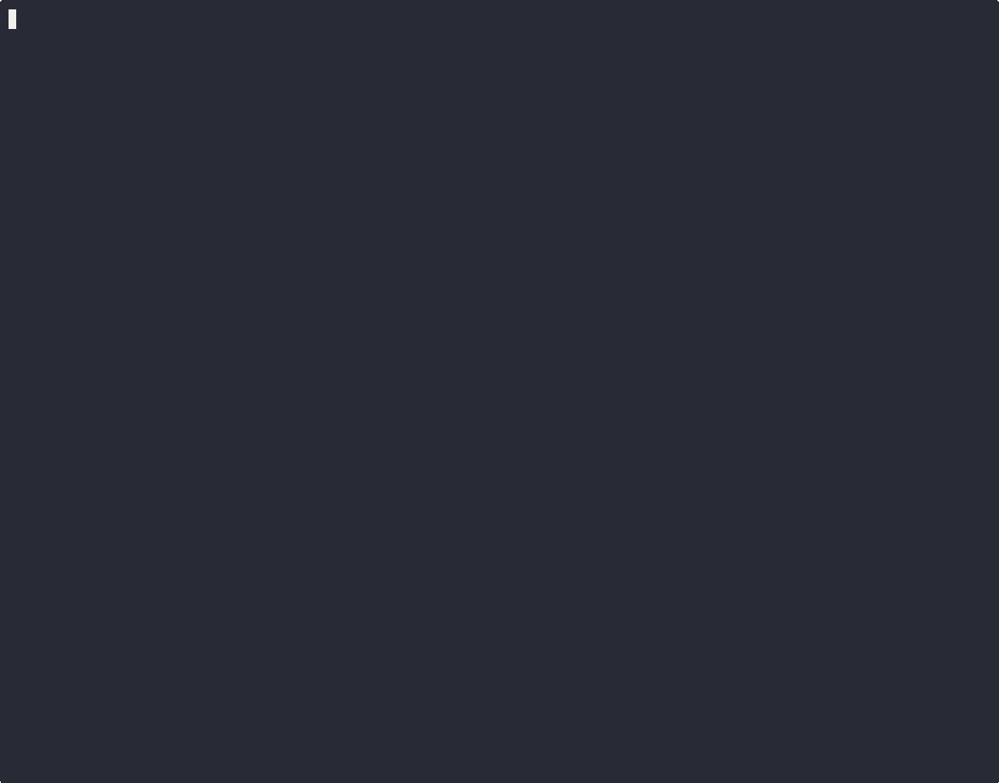

Code review
in your terminal.
tuicr is a TUI for code review with vim keybindings. Scroll a GitHub-style diff, leave line-level comments, then push a real PR review to GitHub, or copy structured markdown for your coding agent.
brew install agavra/tap/tuicr
·
cargo install tuicr
·
mise use github:agavra/tuicr
·
nix run github:agavra/tuicr

live in agavra/tuicr · vim keybindings, GitHub-style diffs, real PR-style comments


features
›GitHub-style diff
Every changed file in one continuous scroll.
›Vim, all the way down
Modal navigation, visual selection, gG jumps, search with /, jump to line N with {N}G. If your fingers know vim, they already know tuicr.
›PR-style comments
Comment at the line, range, file, or review level. Select multi-line ranges with v / V. Classify each by issue, suggestion, note, or praise (or define your own).
›Three export targets
Pull a live PR with tuicr pr 125, then push your review back to GitHub (:submit), copy structured markdown to your clipboard (y), or pipe to stdout for any downstream tool.
›Git, jj & Mercurial
Single static binary, no runtime. Auto-detects the VCS: jj first (jj repos are Git-backed underneath), then git, then hg.
›Agent skill bundle
Ship the /tuicr skill to Claude Code or Codex. The agent opens tuicr in a tmux split; you review, and comments flow back automatically.
themes
export
→GitHub
team workflow:submit opens a picker (Comment, Approve, Request changes, or Draft). Inline comments land on the right lines as a real PR review; review-level comments become the summary. Requires gh authenticated to the repo.
→Clipboard
agent loopy or :clip copies a structured markdown block. Each comment is numbered, classified, and anchored to a file/line. Paste it back to Claude, Codex, Cursor, or any LLM and let it act on the whole batch.
→Stdout
scriptingRun with --stdout to pipe the same markdown to any downstream process. Persist a review to disk, send it to a CI job, pipe it into pbcopy, or chain it into a custom workflow.
compare
| tuicr | hunk | lumen | gh pr review | git diff | |
|---|---|---|---|---|---|
| TUI diff viewer | ✓ | ✓ | ✓ | · | · |
| Comment in the TUI | ✓ | ✓ | ✓ | · | · |
| Vim keybindings | ✓ | · | partial1 | · | · |
| Push inline review → GH | ✓ | · | · | partial2 | · |
| Agent-ready markdown | ✓ | via CLI skill | · | · | · |
| git | ✓ | ✓ | ✓ | · | ✓ |
| jj | ✓ | ✓ | ✓ | · | · |
| Mercurial (hg) | ✓ | · | · | · | · |
| Single static binary | ✓ | needs Node | ✓ | ✓ | ✓ |
gh pr review posts approve/comment/request-changes at the review level only. No inline line comments.keybindings
Navigate
| j / k | down · up |
| Ctrl-d / u | half page |
| { / } | prev · next file |
| [ / ] | prev · next hunk |
| / then n | search · next match |
| gG · {N}G | top · bottom · line N |
Review
| c | comment at cursor |
| C | comment on whole file |
| ;c | review-level comment |
| v / V | visual range select |
| r | toggle reviewed |
| Tab | cycle comment type |
Export & cmds
| :submit | push review to GitHub |
| y · :clip | copy markdown |
| --stdout | pipe to stdout |
| :diff | unified ⇄ side-by-side |
| :commits | pick revision range |
| ? | full help |